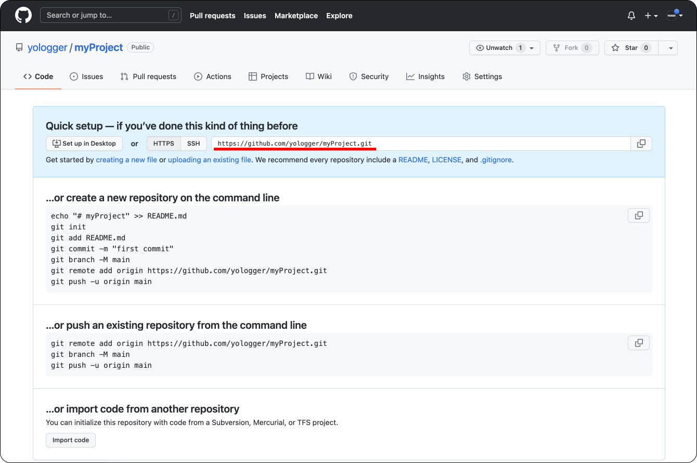

[Git, GitHub] (4) GitHub란? - git remote, git push, gitignore 파일
목차
GitHub
GitHub는 원격 분산 버전관리 시스템이다. Git과는 다음과 같은 차이가 있다.
| Git | GitHub |
|---|---|
| 로컬 저장소에 버전을 관리한다. | 원격 저장소에서 버전을 관리한다. |
| 여러 개발자가 함께 협업할 수 있다. |
GitHub에서 버전을 관리하는 과정은 다음과 같다.
GitHub에 원격 저장소 생성하기
GitHub에 소스 코드를 업로드하려면 원격 저장소(Remote Repository)를 생성해야한다. https://github.com/에 접속하여 New 버튼을 클릭하여 원격 저장소를 생성할 수 있다.
원격 저장소 이름, 설명, 공개 범위를 입력하고 Create repository을 누르면 원격 저장소가 생성된다.
원격 저장소가 생성되면 원격 저장소 URL이 생성된다. 원격 저장소에 소스 코드를 업로드할 때 이 URL을 사용한다.

git remote
git remote명령어를 사용하면 로컬 저장소와 원격 저장소 사이의 연결(Connection)을 생성할 수 있다.
현재 로컬 저장소의 상태는 다음과 같다고 가정하자.
1 | $ git log |
원격 저장소에 파일을 업로드하려면 먼저 READMD.md파일을 생성해야한다. 이 파일에는 프로젝트의 설명을 작성한다. READMD.md 파일을 생성하고 적절하게 작성한 후 Commit 하자.
1 | This is README.md |
1 | $ git add -A |
현재 상태를 확인해보자.
1 | $ git log |
이제 URL을 통해 원격 저장소와의 연결을 만들어야한다. 이때 git remote 명령어를 사용한다. 연결의 이름은 특별한 경우가 아니면 origin을 사용한다.
1 | // git remote add <connection_name> <url> |
연결은 다음과 같이 확인할 수 있다.
1 | $ git remote |
연결 이름을 변경할 수도 있다.
1 | $ git remote rename <old_name> <new_name> |
연결을 삭제할 수도 있다.
1 | $ git remote remove <connection_name> |
git push
연결이 생성되면 파일을 업로드할 수 있다. 먼저 현재 브랜치를 확인해보자.
1 | $ git branch |
git push명령어로 master 브랜치를 업로드하자.
1 | // git push -u <connection_name> <branch> |
이제 https://github.com/에 접속하여 해당 원격 저장소에 접속해보자. 파일이 업로드된 것을 확인할 수 있다.
콘솔에서 로그를 확인해보자.
1 | $ git log |
마지막 Commit의 ID 뒷 부분에 origin/master가 추가되었다.
아래 출력물을 해석해보자.
1 | commit 111111 (HEAD -> master, origin/master) |
HEAD: 현재 Id가 111111 Commit에서 작업 중이다.master: master 브랜치의 최신 Commit이 111111다.origin/master: origin으로 연결된 원격 저장소의 master 브랜치의 최신 Commit이 111111다.
gitignore
.gitignore파일을 사용하면 원격 저장소에 Push할 때 특정 파일은 무시할 수 있다.
예제를 살펴보자. 아래 상태에서
1 | $ ls |
.gitignore파일을 다음과 같이 작성하면
1 | $ vim .gitignore |
원격 저장소에 Push할 때 a.txt, b.txt가 업로드되지 않는다.